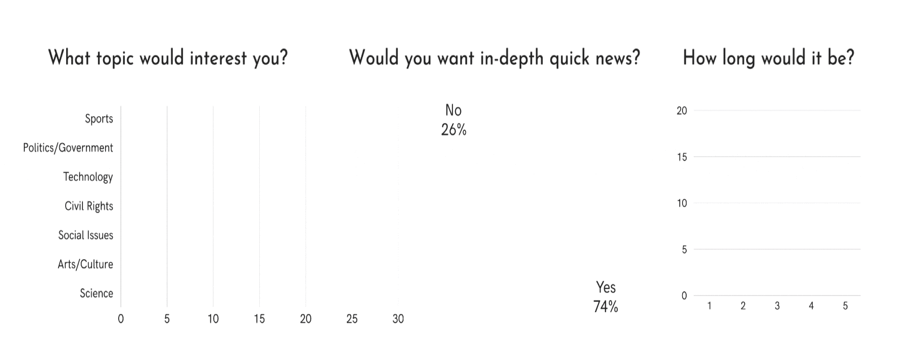

Current2
news startup in Ann Arbor
Aug 2023 - Jan 2024
Client Overview
Current2: Condenses the overwhelming amount of news into a 2 minute of audio delivered by a text message
Mission Statement: At Current2, we believe staying informed should be easy! Our team of journalists searches across all major publications to bring you the most important headlines: quick, easy, and just the facts.
Team: Catherine Nelson, Emily Farhat, Sharra Kutty, Nessa Orumchain, Leah George
Initial Research
Brand Research
When reseraching as well as talking to the CEO I created a Brand book for the company to utlize for the later years, creating a template that the brand should follow. Here are some findings that I identified:
- Product/Service Details: 2-minute audio summaries delivered via text message.
- Brand Guidelines: Utilizing News images paired with headlines to capture the audience
- Marketing & Communication Strategy: Instagram and TikTok to promote reels and TikToks
- Brand Values: Urgency in global awareness, Simplifying complex news, Easy accessibility, 2-minute comprehensive updates, Fostering an informed community
SWOT Analysis
Data-driven decision making is at the heart of our strategy. Through comprehensive market research, including a Preliminary SWOT, Consumer, and Competitor Analysis we identified valuable trends.
Consumer Analysis
- The primary audience for this political news source is University of Michigan students, particularly those majoring in Political Science, Law, International Business, and Economics.
- Driven by both professional/academic requirements and a thirst for new developments, this demographic actively consumes current events.
- Consumers crave easily digestible, consistently delivered content, yet struggle with finding readily accessible sources.
Comptetive Analysis
While established giants like NPR, CNN, FOX, and NBC offer comprehensive news with large audiences and credibility, Current2 stands out by providing factual, bite-sized updates delivered conveniently as a podcast, perfect for busy students seeking a news source free from opinion and bias.
Semester Goals
- Increase the number of Subscribers, grow from 60-> 120 daily listeners
- Increase Awareness of Current2 by having faculty endorse it
- Segmenting audiences with in-depth news stories
Specific Market Research
We surveyed College students and older demographics to see which news topics they would be more interested in learning about addressed the questions: 
Boosting Campus Visibility (Non-UofM Org)
- Goal: Brand awareness for non-UofM org on UofM campus.
- Challenge: Securing high-traffic tabling locations (restrictions for non-affiliated groups).
- Solution: Contacted tabling services while utilizing accessible locations, ensuring a strategic launch.
Flyering and Design Deliverable
Traditional flyers often get lost in the shuffle. To maximize brand awareness for Current2, I prioritized time efficiency while maintaining brand consistency. Through an ideation process, I designed eye-catching stickers based on Current2's existing color scheme and clean look, incorporating a microphone motif to further represent the podcast format. To cater to different information preferences, I designed compact flyers that complemented the stickers with detailed information. Leveraging Adobe Illustrator and Canva, I efficiently brought these designs to life while conducting a comprehensive cost analysis across printing services, ensuring a budget-friendly solution. This initiative offered a more engaging alternative to flyers, fostering brand recognition on campus.
Next Steps
- Professor outreach: Emailing relevant professors through PoliSci, PPE, Business, and other LSA students to speak on C2
- Specific stories: Allow Listeners with more personailzation to dive deeper in stories and topics that they are interested in
- Diag (Main Campus) Board: Managing a large advertisement with all the relevant information to allow for campus-wide recognition in ideally a prime spot on campus